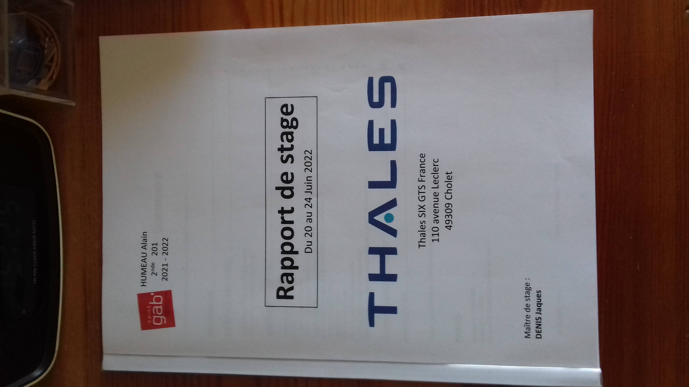

Home
Projects
FR
EN
Alain Humeau
alias Loup_1234
Mes compétences
Les logiciels que j'utilise

My internship report
Internship at Thales
In Cholet (49), at a company specializing in military communications equipment.
Exploration of all Thales departments.
Exchanges with various post-graduate trainees.
Attended a meeting for new employees on Thales regulations.
Participation in Thales Labor Day.
Interests
Passion for programming.
Keeping abreast of technological advances.
Experimentation with various Linux distributions.
Creation of websites, Android applications and video games.
Exploration of open source software, mainly on GitHub.
A keen interest in Japanese and Oriental culture.
Do sports to relax.